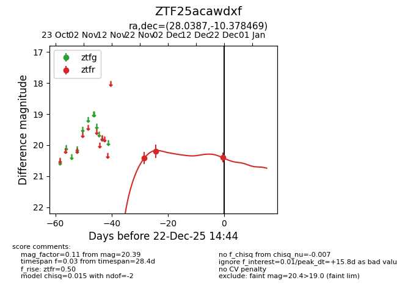
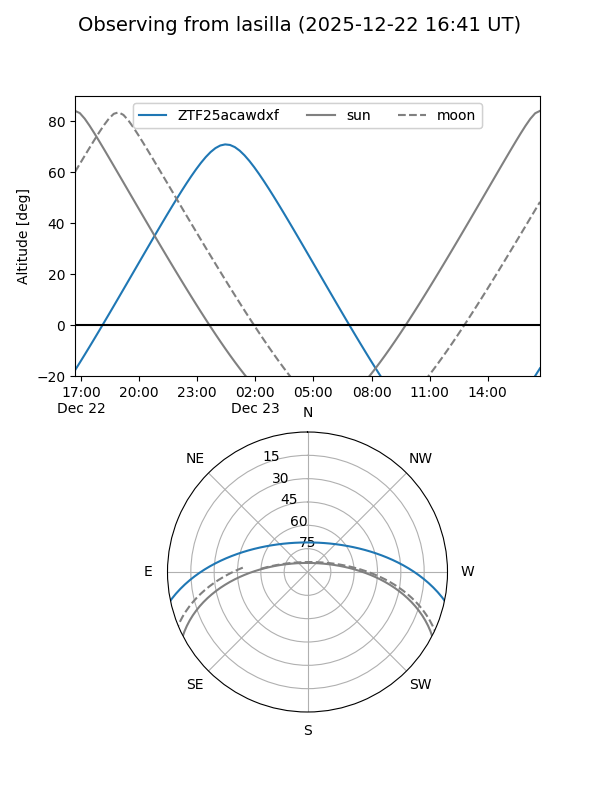
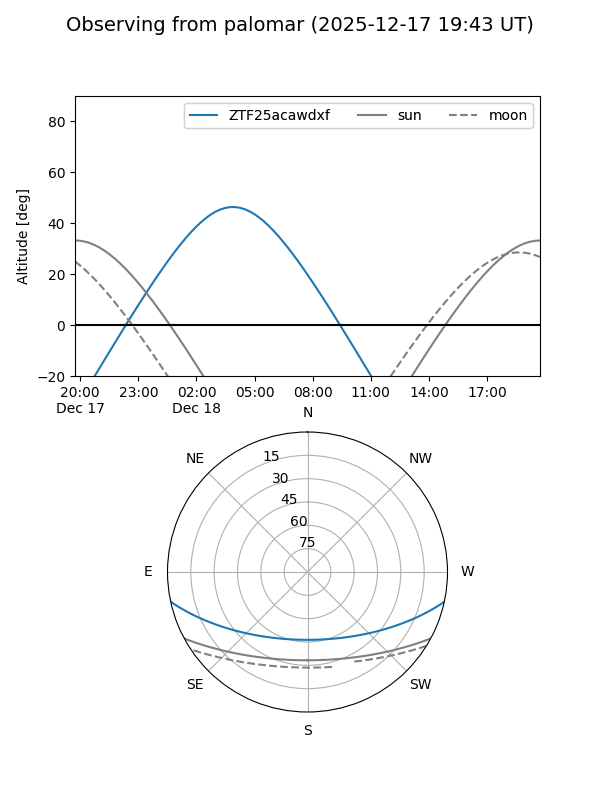
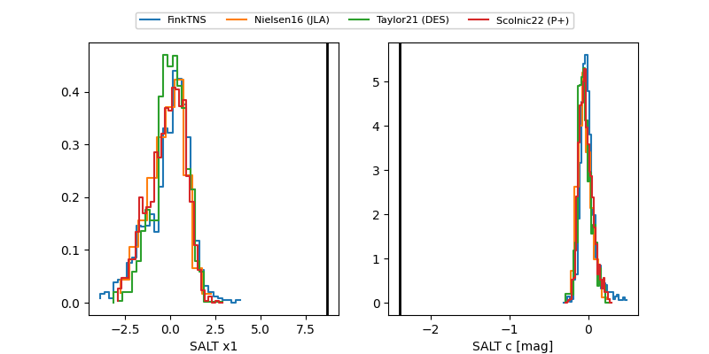

ZTF25acawdxf
Target ZTF25acawdxf at 2025-12-22 14:46
Aliases and brokers:
FINK: fink-portal.org/ZTF25acawdxf
Lasair: lasair-ztf.lsst.ac.uk/objects/ZTF25acawdxf
ALeRCE: alerce.online/object/ZTF25acawdxf
alt names
ZTF25acawdxf (ztf,fink_ztf)
Coordinates:
equatorial (ra, dec) = 28.0387,-10.37847
equatorial (HMS+DMS) = 01:52:09.29,-10:22:42.49
galactic (l, b) = (166.3123,-67.97650)
Flags:
Photometry:
last ztfr=20.39
3 ztfr detections
Lightcurve

Visibility


Additional plots
